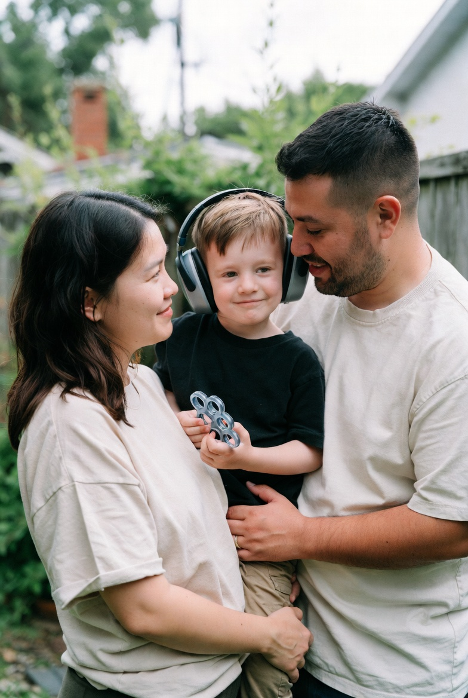

About LoneStar Support
Relationships are part of the care plan—because love still needs room to grow.
We are a Texas-based 501(c)(3) nonprofit with a simple belief: when caregivers feel connected, children feel safer. Your generosity is tax-deductible to the extent allowed by law.

Who we are
LoneStar Support maintains a statewide network of volunteers who are trained as relationship coaches—not therapists, not case managers, but steady partners in conversation. We exist for parents and caregivers who are doing complex, beautiful work and still long to feel close to the person beside them.
Our model is collaborative: you bring your story; we bring tools, encouragement, and a calm place to sort through what’s hardest to say.
501(c)(3) transparency
EIN: TBD
How coaching works
You’re matched thoughtfully
We consider schedule, communication style, and what you need most—whether that’s conflict reduction, teamwork, reassurance, or reconnection.
Sessions stay practical
You’ll leave with language you can use today—gentle starts, repair steps, and boundaries that protect closeness.
Community follows
You’ll meet others who understand the blend of grief and gratitude—without fixing you, labeling you, or rushing your pace.
A light Texas touch, a deep Texas promise
We serve families across the Lone Star State with respect for distance, diversity, and the many ways “family” is defined. The star in our name is a reminder: you still deserve to shine—in your partnership, your parenting, and your hope.